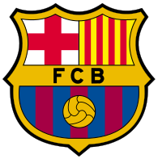

СОДЕРЖАНИЕ

Лионе́ль Андре́с Ме́сси (исп. Lionel Andrés Messi родился 24 июня 1987, Росарио, Аргентина) — аргентинский футболист, нападающий клуба «Пари Сен-Жермен», капитан сборной Аргентины. Лучший бомбардир в истории чемпионата Испании, «Барселоны» и сборной Аргентины. Признаётся одним из лучших футболистов всех времён. Шестикратный обладатель «Золотого мяча» и «Золотой бутсы». Воспитанник академии «Барселоны», в составе первой команды которой начал выступать с 17 лет. Вместе с клубом выиграл десять титулов чемпиона Испании, четыре Лиги чемпионов УЕФА, семь Кубков Испании, восемь Суперкубков Испании, три Суперкубка Европы и три чемпионата мира среди клубов.

Луис Суарес перешел в «Барселону» за 81 млн евро. Трансфер Суареса на тот момент стал самым дорогим в истории клуба и третьим по стоимости в истории мирового футбола. В своём первом же сезоне в составе «сине-гранатовых» сделал «золотой хет-трик», выиграв чемпионат Испании, Кубок Испании и Лигу чемпионов УЕФА. В сезоне 2015/16 был признан игроком года в испанском чемпионате, а также стал обладателем «Золотой бутсы» (40 голов).

Роналдиньо — бразильский футболист, выступал на позиции атакующего полузащитника и нападающего. Обладатель «Золотого мяча» (2005), вручаемого лучшему футболисту Европы. Лучший футболист мира по версии ФИФА в 2004 и 2005 годах. Считался одним из лучших футболистов на пике своей карьеры. Отличался невероятными дриблингами и креативной игрой.

Хе́ндрик Йо́ханнес Кройф — нидерландский футболист и тренер сборной Нидерландов, «Аякса» и «Барселоны». Трёхкратный обладатель Золотого мяча, три раза выигрывал Кубок европейских чемпионов в качестве игрока и один раз в качестве тренера; широко признан одним из лучших футболистов XX века. Всего за свою карьеру сыграл 752 матча, забил 425 мячей.

Рональд Куман — нидерландский футболист и футбольный тренер. Ныне главный тренер «Барселоны». Дважды удостаивался звания футболиста года в Нидерландах. Большинством специалистов признаётся самым результативным защитником в истории мирового футбола. Известен в первую очередь своим умением бить штрафные удары. Большое количество голов забил именно со стандартов.

Сесар Родригес Альварес — испанский футболист и тренер. Пятикратный чемпион Испании. Сесар Родригес более полувека являлся лучшим бомбардиром в истории «Барселоны» в официальных матчах с результатом 232 мяча. Однако 20 марта 2012 года рекорд был побит аргентинским нападающим Лионелем Месси.

Хавье́р Эрна́ндес Кре́ус — рекордсмен клуба по числу матчей в чемпионате Испании и Лиге чемпионов УЕФА. Четыре раза признавался лучшим плеймейкером мира (2008, 2009, 2010, 2011). Лучший игрок Евро-2008. Входил в символическую сборную Европы по версии УЕФА (2008, 2009, 2010, 2011, 2012) и символическую сборную мира по версии ФИФА (2008, 2009, 2010, 2011, 2012, 2013). Третий футболист мира (2010, 2011). Хави отличает прекрасное видение поля и непревзойдённая техника паса.

Ка́рлес Пуйо́ль Сафорка́да — испанский футболист, в основном выступал на позиции центрального защитника, но также мог играть и на обоих флангах обороны, в основном — на правом. Считался одним из лучших защитников своего поколения. Всю карьеру провёл в испанском клубе «Барселона», был капитаном команды с 2004 по 2014 год, сыграл в её составе 682 матча и забил 23 гола. Выступал и за сборную Испании, занимал должность вице-капитана команды.

Андрéс Инье́ста Луха́н — самый титулованный испанский игрок в истории (37 титулов). Вместе с клубом он выиграл девять титулов чемпиона Испании, четыре Лиги чемпионов УЕФА, шесть Кубков Испании, семь Суперкубков Испании, три Суперкубка Европы и три чемпионата мира среди клубов. В 2012 году Иньеста — лучший игрок Европы по версии УЕФА. Трижды — лучший атакующий полузащитник Примеры и дважды — лучший плеймейкер мира. Второй футболист мира в 2010 году и третий футболист мира в 2012 году. Пять раз входил в символическую сборную Европы по версии УЕФА и восемь раз в символическую сборную мира по версии ФИФА. 13 октября 2014 года Иньеста стал обладателем награды «Golden Foot», присуждаемой футболистам за высокие спортивные успехи.

Дие́го Арма́ндо Марадо́на — аргентинский футболист, игравший на позициях атакующего полузащитника и нападающего. Чемпион мира 1986 года, вице-чемпион мира 1990 года. Лучший футболист XX века по голосованию на официальном сайте ФИФА, где он набрал 53,6 % голосов; по версии футбольной Комиссии ФИФА, Марадона — 3-й футболист в XX веке. По опросу МФФИИС занимает 5-е место среди лучших футболистов мира XX века.

Рива́лдо — бразильский футболист, атакующий полузащитник и нападающий. «Барселона» купила бразильского игра, заплатив за трансфер огромную по тем временам сумму в 26 миллионов долларов. За каталонский клуб Ривалдо провёл свои лучшие годы: 235 матчей, 130 голов, выигрыш Золотого мяча 1999, титула лучшего футболиста года в мире по версии ФИФА, двух чемпионатов Испании, Кубка Испании и Суперкубка УЕФА.

Хосе́п Мария Гвардио́ла-и-Са́ла — испанский футбольный тренер, ранее выступавший как футболист на позиции полузащитника. Самый титулованный тренер в истории «Барселоны». Выступал на позиции опорного полузащитника. Большую часть своей карьеры он провёл в «Барселоне», став частью «Команды мечты» Йохана Кройфа, которая выиграла первый Кубок Европы в 1992 году и четыре титула чемпиона Испании с 1991 по 1994 год. Впоследствии он был капитаном команды с 1997 года до своего ухода из клуба в 2001 году.

Де́ку — португальский футболист бразильского происхождения, игравший на позиции атакующего полузащитника. В начале-середине 2000-х годов считался одним из лучших футболистов мира в амплуа атакующего полузащитника. Деку дважды признавали лучшим полузащитником Лиги чемпионов УЕФА (в 2004 и 2006 годах).

По всем вопросам звоните по номеру +7(904)-507-03-90